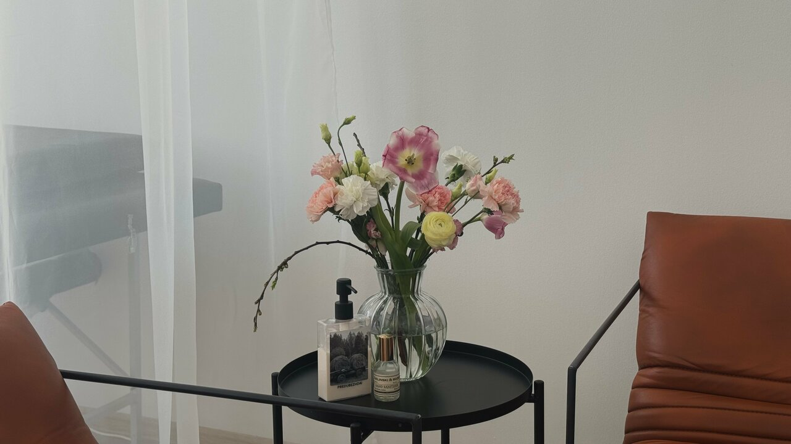
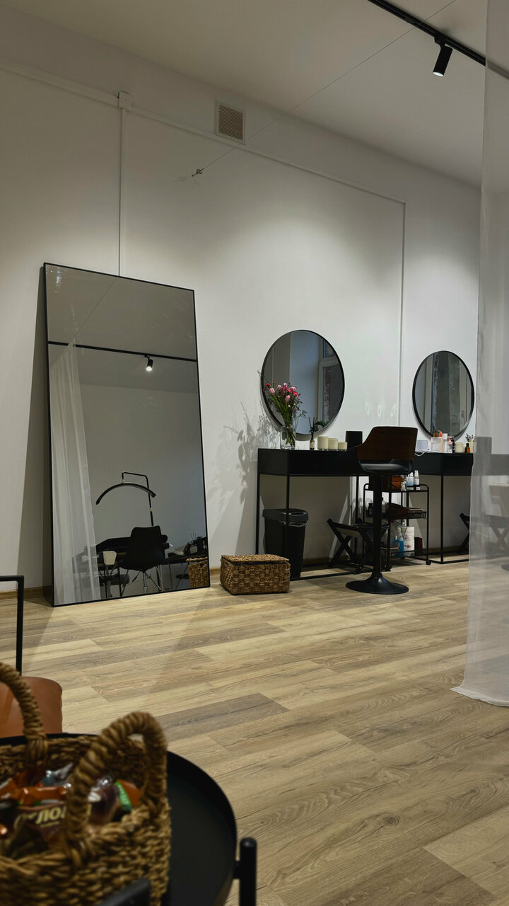
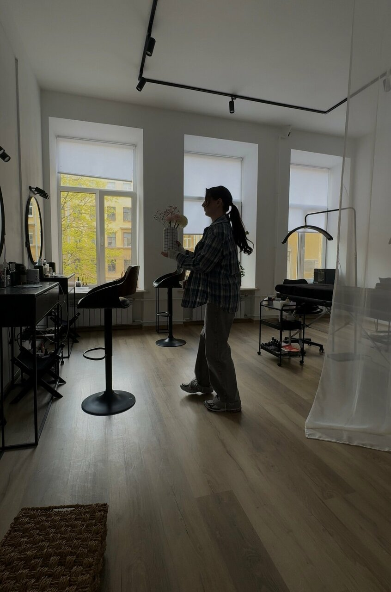

Студия бровей и ресниц Анны Коноваловой
Оформление и ламинирование бровей, ламинирование ресниц — на Владимирском проспекте, 15, в 150 м от метро «Достоевская».
или позвоните: +7 (911) 839-04-86Направления
Нажмите на направление, чтобы открыть его цены.
О салоне
Студия бровей и ресниц в самом центре Петербурга: Владимирский проспект, 15, 2 этаж, офис 32. Работают два мастера-преподавателя — Анна Коновалова и Анна Пискунова. Каждый день с 12:00 до 21:00.


Основатель студии
Основа нашей работы — брови по любому запросу, с упором на натуральность и сохранение формы. И качественное ламинирование ресниц, которое носится долго и комфортно.
Анна Коноваловамастер-бровист и ламимейкер, преподаватель, опыт 5 лет
Прайс
Точную цену уточняйте при записи.
Из отзывов
Естественный и ухоженный результат
Учитывают все пожелания — брови по любому запросу
Уютная, красивая студия в центре
Отзывы
Делала брови и ресницы перед свадьбой — всё получилось аккуратно, естественно и ухоженно, именно так, как хотела. Ресницы просто невероятные. С мастером легко и комфортно, время пролетело незаметно.
Хожу в студию уже давно: уютная атмосфера и видно, с какой любовью здесь относятся к делу. Всё всегда аккуратно, результат восхитительный.
Самая красивая студия в центре Петербурга — всегда красиво и качественно.
Атмосфера
Контакты
| Понедельник | 12:00–21:00 |
| Вторник | 12:00–21:00 |
| Среда | 12:00–21:00 |
| Четверг | 12:00–21:00 |
| Пятница | 12:00–21:00 |
| Суббота | 12:00–21:00 |
| Воскресенье | 12:00–21:00 |
Запись
Позвоните или напишите в мессенджер — подберём мастера и время.
+7 (911) 839-04-86